Objectif du projet :Project Objective:
Au cours de ce projet étalé sur une semaine, le but est de mettre en place une solution de MFA. Cette solution permettra d’approfondir la sécurité chez le client.
During this project spread over a week, the goal is to implement an MFA solution. This solution will deepen security at the client's site.
Situation du client :Client Situation:
L’entreprise dispose d’une infrastructure informatique notamment composée d’un pare-feu WatchGuard, qui permet une connexion via VPN, ainsi que d’un serveur Active Directory synchronisé avec le cloud Microsoft 365. Le client souhaite que ses utilisateurs disposent d’un accès à la suite office 365 et au VPN géré en fonction de la mise en place du MFA ainsi que de leur localisation.
The company has an IT infrastructure notably composed of a WatchGuard firewall, which allows connection via VPN, as well as an Active Directory server synchronized with the Microsoft 365 cloud. The client wants its users to have access to the Office 365 suite and the VPN managed according to the implementation of MFA as well as their location.
Lien avec le parcours cyber : Ce projet s’ancre parfaitement dans mon parcours car il me permet de voir la mise en oeuvre de A à Z d’une couche supplémentaire de sécurité au sein d’une entreprise. Ici, le MFA sert à éviter la compromission du service informatique lors d’une fuite de mots de passe ou d’un phishing.
Link with the cyber track: This project fits perfectly into my track because it allows me to see the implementation from A to Z of an additional security layer within a company. Here, MFA is used to prevent the compromise of the IT service during a password leak or phishing.
Environnement et OutilsEnvironment and Tools
Microsoft Entra ID Microsoft Entra ID
Centre d'administration utilisé pour la gestion des identités cloud, la création des accès conditionnels et la synchronisation hybride.Administration center used for managing cloud identities, creating conditional accesses, and hybrid synchronization.
Active Directory Active Directory
Service d'annuaire local synchronisé avec Entra ID via Connect Sync pour la gestion des comptes et groupes hybrides.Local directory service synchronized with Entra ID via Connect Sync for managing hybrid accounts and groups.
Microsoft 365 Microsoft 365
Suite de services applicatifs cloud dont l'ensemble des accès sont filtrés et sécurisés par le déploiement de notre MFA.Cloud application suite where all access is filtered and secured by the deployment of our MFA.
WatchGuard VPN WatchGuard VPN
Pare-feu réseau configuré pour déléguer l'authentification multifacteur de ses télétravailleurs via une intégration SAML.Network firewall configured to delegate its teleworkers' multi-factor authentication via SAML integration.
Les Moyens d'AuthentificationAuthentication Methods
Le MFA (Multi-Factor Authentication ou Authentification à Facteurs Multiples) est une méthode qui ajoute une couche de sécurité supplémentaire dans la connexion. Elle est utile quand un utilisateur s’est fait dérober son mot de passe par exemple. Cette méthode se matérialise par l’envoi d’une notification à l’utilisateur après l’entrée de son mot de passe.MFA (Multi-Factor Authentication) is a method that adds an extra layer of security in the connection. It is useful when a user has had their password stolen, for example. This method materializes by sending a notification to the user after entering their password.
Lors de ce projet, nous avons mis en place deux moyens de double-authentification :During this project, we set up two means of two-factor authentication:
Microsoft Authenticator :Microsoft Authenticator:
Authenticator est une application créée par Microsoft qui permet notamment la connexion à la suite Office 365. Lors de la saisie du mot de passe, une pop-up apparaît sur le PC avec un nombre à deux chiffres. L’utilisateur peut alors rentrer ce code sur son téléphone pour se connecter.
Authenticator is an application created by Microsoft that allows, in particular, connection to the Office 365 suite. When entering the password, a pop-up appears on the PC with a two-digit number. The user can then enter this code on their phone to connect.
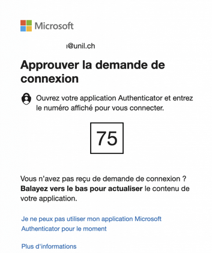
Token physique :Physical Token (TOTP):
Pour l'alternative physique, nous utilisons le token C202 de token2. Cette fois, lors de la connexion, un code à 6 chiffres est demandé. Celui-ci est généré par le token à l’aide du hash SHA1 de sa seed (clé secrète unique) et d’un facteur de temps.
Token C202 from token2. This time, upon connection, a 6-digit code is requested. This is generated by the token using the SHA1 hash of its seed (unique secret key) and a time factor.
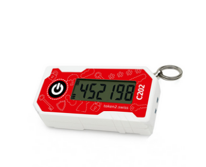
Logique et Détail des StratégiesLogic and Policy Details
Avant d'implémenter nos accès conditionnels dans Entra ID, il était nécessaire de résumer la logique des droits avec des tableaux. En effet, une personne ne peut être que dans un seul de ces groupes à la fois et la méthode MFA exigée dépend fortement du profil.Before implementing our conditional accesses in Entra ID, it was necessary to summarize the logic of the rights with tables. Indeed, a person can only be in one of these groups at a time and the required MFA method strongly depends on the profile.
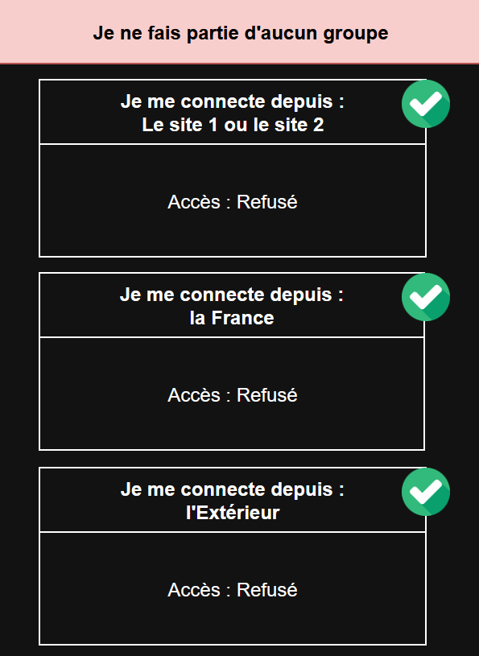
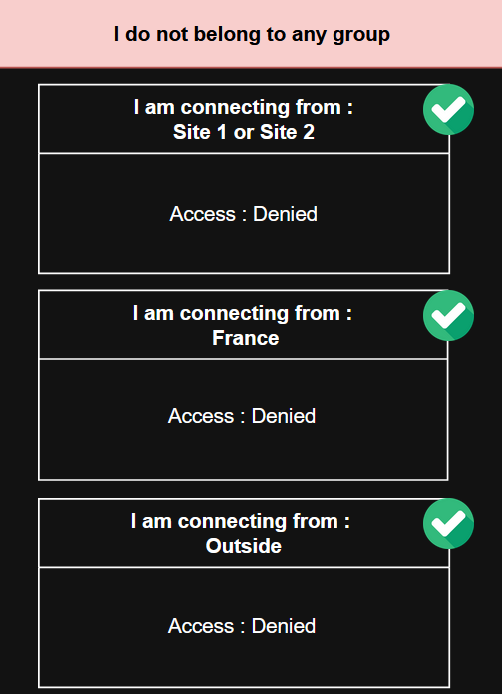
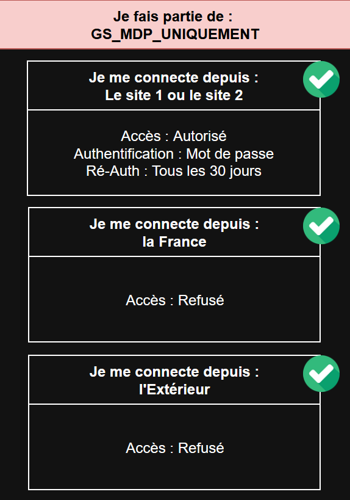
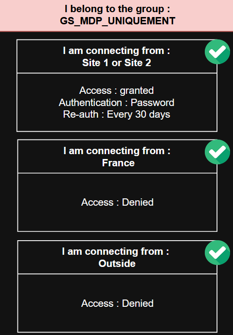
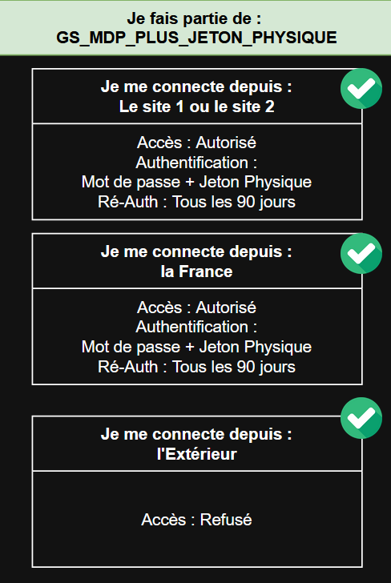
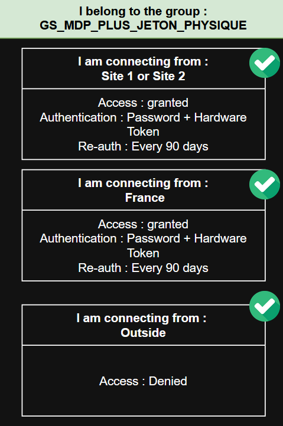
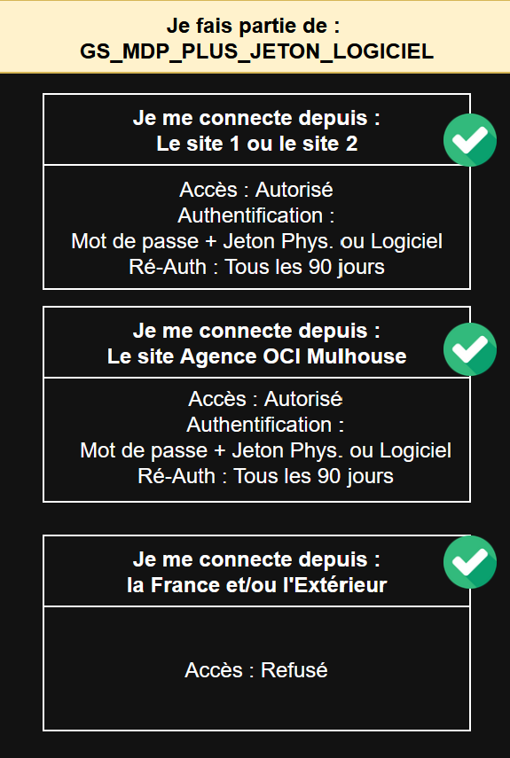
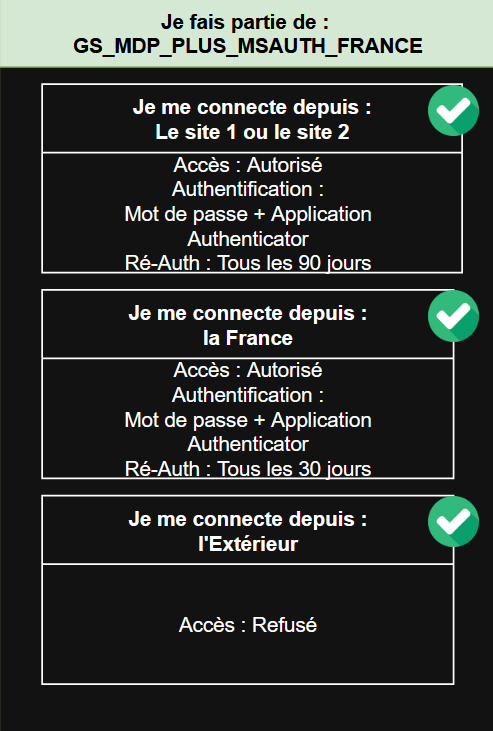
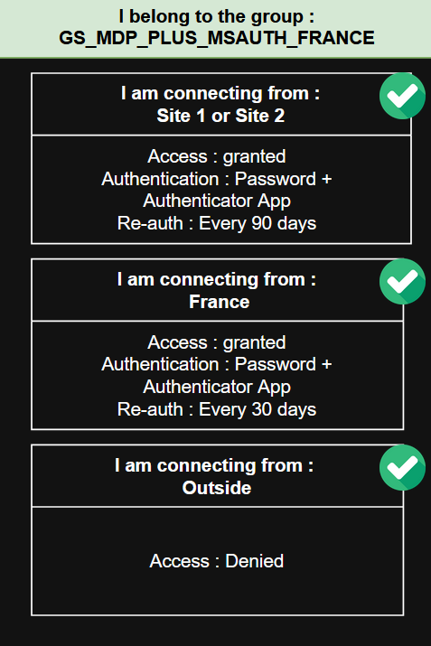
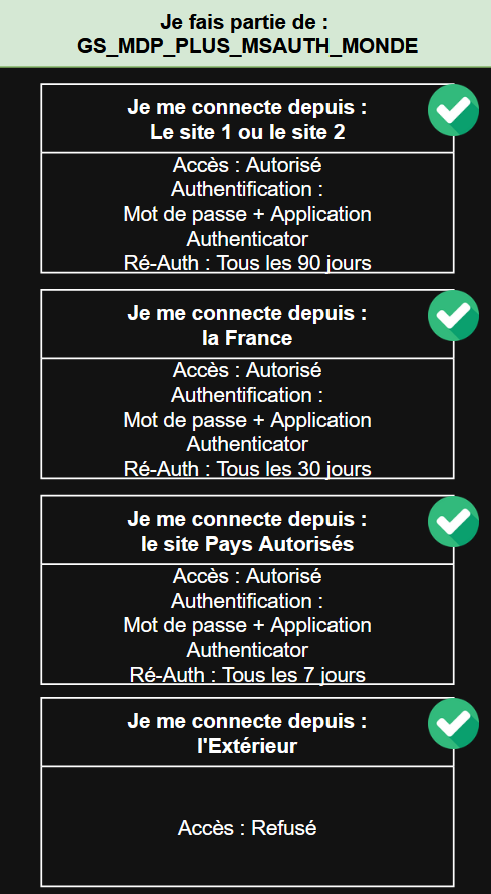
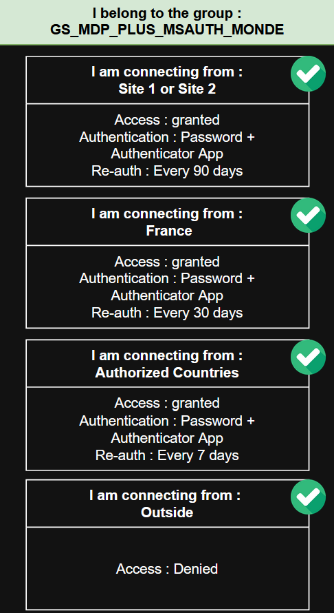
Procédure - Partie MFA 365Procedure - MFA 365 Part
1 - Création des groupes sur l’AD et Entra1 - Group Creation on the AD and Entra
Pour chacune des possibilités définies précédemment, nous avons créé dans l’AD un groupe de sécurité For each of the possibilities defined above, we created a security group in the AD GS_..._AD qui regroupe les utilisateurs auxquels s’appliquent ces stratégies. which groups the users to whom these policies apply.
En parallèle, nous avons créé leur équivalent dans Microsoft Entra pour les comptes “cloud only” (qui ne sont pas définis dans l’AD), comme certains comptes d’administrateurs ou encore des comptes génériques tels que les boîtes aux lettres partagées.In parallel, we created their equivalent in Microsoft Entra for "cloud only" accounts (which are not defined in the AD), such as certain administrator accounts or generic accounts like shared mailboxes.
Note :Note: Une personne ne peut être que dans un seul de ces groupes à la fois. A person can only be in one of these groups at a time.
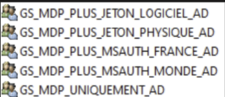
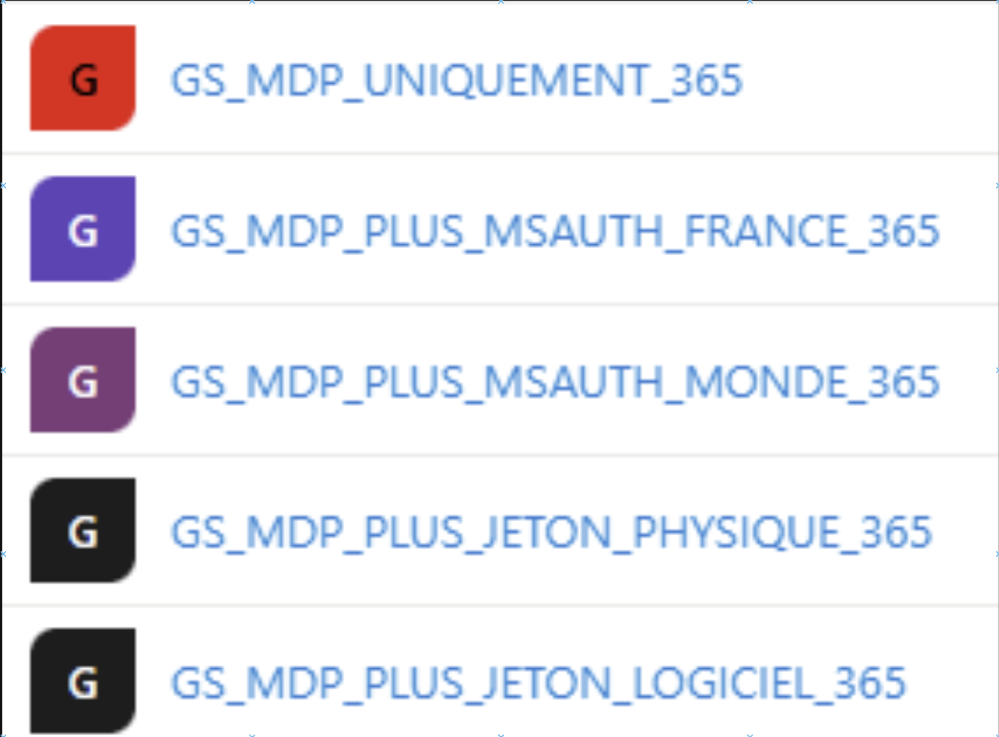
2 - Création des points forts d’authentification2 - Creation of Authentication Strengths
Nous définissons ici les différents moyens de connexion pour les utilisateurs. Si l'on reprend les catégories, nous avons configuré 4 méthodes :We define here the different connection means for the users. If we take the categories, we configured 4 methods:
- Mot de passe uniquementPassword only
- Mot de passe et jeton logiciel tiersPassword and third-party software token
- Mot de passe et jeton physiquePassword and physical token
- Mot de passe et Microsoft AuthenticatorPassword and Microsoft Authenticator
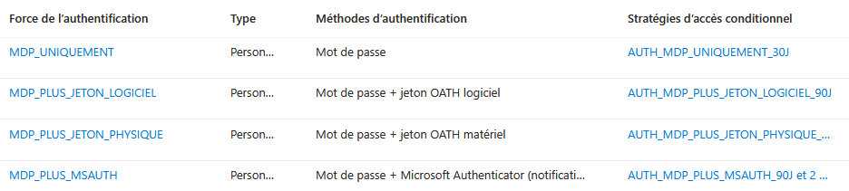
3 - Création des emplacements nommés3 - Creation of Named Locations
Afin que les conditions de connexion s’appliquent en fonction de la localisation, nous avons créé des emplacements nommés, en définissant des lieux auxquels les stratégies seront ensuite appliquées.So that the connection conditions apply based on location, we created named locations, defining areas to which the policies will then be applied.
Nous avons pu définir ces points de deux façons :We were able to define these points in two ways:
- Pour les pays, en choisissant pays par pays.For countries, we chose country by country.
- Pour les lieux comme l’agence et les deux sites locaux, en indiquant une liste précise d’IP publiques.For locations like the agency and the two local sites, we specified a precise list of public IPs.
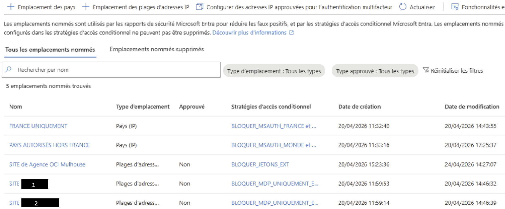
4 - Création des stratégies4 - Creation of Policies
Nous avons attribué aux différents groupes créés des méthodes d’authentifications, ainsi que des temps avant ré-authentification (par exemple, quelqu’un travaillant sur site devra se reconnecter via Authenticator tous les 3 mois, alors que quelqu’un travaillant en dehors de la France devra se reconnecter tous les 7 jours).We will assign authentication methods to the different groups created, as well as times before re-authentication (for example, someone working on-site will have to reconnect via Authenticator every 3 months, whereas someone working outside France will have to reconnect every 7 days).
Logique de création des stratégies :Policy creation logic:
Si un utilisateur est concerné par deux stratégies à la fois, If a user falls into two policies at the same time, c’est la plus restrictive qui s’appliquethe most restrictive one applies. Sachant cela, nous avons d’abord créé les stratégies qui bloquent la connexion :. Knowing this, we first created the policies that block the connection:
- BLOQUER_NO_GROUP :BLOQUER_NO_GROUP: si l’utilisateur n’est dans aucun des groupes, son authentification est forcément bloquée. if the user is in none of the groups, their authentication is necessarily blocked.
- BLOQUER_MDP_UNIQUEMENT_EXT :BLOQUER_MDP_UNIQUEMENT_EXT: si l’utilisateur n’a qu’un mot de passe sans MFA, il est bloqué partout sauf sur site. if the user only has a password without MFA, they are blocked everywhere except on-site.
- BLOQUER_JETONS_PHYSIQUE_EXT / BLOQUER_JETONS_LOGICIEL_EXT :BLOQUER_JETONS_PHYSIQUE_EXT / BLOQUER_JETONS_LOGICIEL_EXT: Si l’utilisateur dispose d’un jeton physique ou d’un jeton logiciel tiers, il est bloqué s’il se connecte en dehors de la France. If the user has a physical token or a third-party software token, they are blocked if connecting outside of France.
- BLOQUER_MSAUTH_FRANCE :BLOQUER_MSAUTH_FRANCE: Même chose version Authenticator. Same thing for the Authenticator version.
- BLOQUER_MSAUTH_MONDE :BLOQUER_MSAUTH_MONDE: Si l’utilisateur se connecte depuis un autre pays non autorisé, il est forcément bloqué. If the user connects from another unauthorized country, they are necessarily blocked.
Stratégies d'octroi d'accès :Access grant policies:
Ensuite, nous définissons nos stratégies dans les cas où l’utilisateur peut se connecter :Next, we define our policies for cases where the user is allowed to connect:
- AUTH_MDP_UNIQUEMENT_30J
- AUTH_MDP_PLUS_JETON_LOGICIEL_90J
- AUTH_MDP_PLUS_JETON_PHYSIQUE_90J
- AUTH_MDP_PLUS_MSAUTH_7J
- AUTH_MDP_PLUS_MSAUTH_30J
- AUTH_MDP_PLUS_MSAUTH_90J
Par exemple, si un utilisateur du groupe For example, if a user from the GS_MDP_PLUS_MSAUTH_MONDE se connecte depuis l’Allemagne, pays autorisé, une réauthentification périodique de 7 jours lui est appliquée et la connexion via Authenticator est forcée. group connects from Germany, an authorized country, a periodic re-authentication of 7 days is applied to them and connection via Authenticator is forced.
Une fois que nos stratégies sont définies et appliquées, nous pouvons faire installer l’application aux utilisateurs.Once our policies are defined and applied, we can have the users install the application.
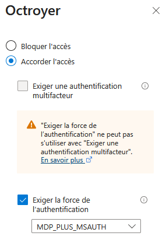
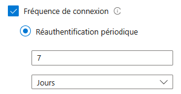
Deuxième Partie : Mise en place du MFA pour le VPNPart Two: Implementing MFA for the VPN
Les utilisateurs se connectant au VPN doivent faire partie du groupe Users connecting to the VPN must be part of the SSLVPN-Users dans l’AD. group in the AD.
Pour la connexion, nous avons pu For the connection, we were able to déléguer l’authentification à Microsoftdelegate authentication to Microsoft et donc appliquer nos stratégies définies précédemment. Pour mettre en place ce mode de connexion, nous sommes passés par l’ajout d’un serveur d’authentification SAML. Pour cela, dans Entra -> Applications d’entreprises, nous avons ajouté and thus apply our previously defined policies. To set up this connection mode, we went through the addition of a SAML authentication server. To do this, in Entra -> Enterprise Applications we added Firebox Authentication Portal SAML.
Dans la partie Authentification unique, nous avons configuré notre VPN, notamment avec un certificat de signature de jetons récupéré sur la page d’administration du vpn In the Single sign-on section, we configured our VPN, notably with a token signing certificate retrieved from the VPN administration page vpn.domain.com/auth/saml. Une fois que ce lien est configuré, nous avons pu gérer la partie utilisateurs.. Once this link is configured, we were able to manage the user section.
Côté Utilisateur :User Side:
Cette délégation se présente sous la forme suivante : En sélectionnant This delegation looks like this: By selecting “S’authentifier avec SAML”“Authenticate with SAML”, l’utilisateur verra apparaître une page de connexion Microsoft classique, suivi d’un code pour le MFA comme d’habitude., the user will see a classic Microsoft login page appear, followed by a code for the MFA as usual.
Note : besoin de maj du client vpn pour la connexion via SAML.Note: need to update the VPN client for connection via SAML.
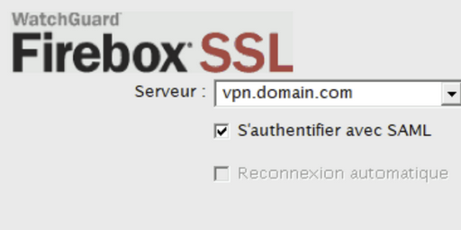
Autres tâches réaliséesOther Completed Tasks
Sécurité Mail (DMARC, SPF, DKIM)Email Security (DMARC, SPF, DKIM)
Nous avons mis en place une politique We implemented a DMARC autorisant l'expéditeur à indiquer que ses courriels sont protégés. policy allowing the sender to indicate that their emails are protected. SPF sert d'« annuaire » des serveurs d'envoi et serves as a "directory" of sending servers and DKIM de signature sur mail. Ces enregistrements sont stockés dans le DNS. as a signature on emails. These records are stored in the DNS.
Audit Microsoft 365Microsoft 365 Audit
Nous avons réalisé un audit global : passage en revue des utilisateurs et des comptes admin, vérification des licences et de la synchronisation Active Directory / Entra ID, ainsi que l'analyse des problèmes de confidentialité des groupes publics.We conducted a global audit: reviewing users and admin accounts, verifying licenses and Active Directory / Entra ID synchronization, as well as analyzing the privacy issues of public groups.
Automatisation PowershellPowershell Automation
Nous avons utilisé des We used scripts PowershellPowershell scripts pour effectuer des exports de l'Active Directory sur un tableau Excel afin d'assurer une supervision précise des comptes (Hybrides ou Cloud only) et des appartenances aux groupes de sécurité durant le déploiement. to perform exports of the Active Directory to an Excel spreadsheet to ensure precise monitoring of accounts (Hybrid or Cloud only) and security group memberships during the deployment.
Documentations TechniquesTechnical Documentation
Nous avons créé de nombreux supports : schémas détaillés des stratégies (.drawio), guides de revue par utilisateur, manuels d'attribution des tokens physiques et procédures de résolution des problèmes de synchronisation.We created numerous materials: detailed policy diagrams (.drawio), user review guides, physical token assignment manuals, and procedures for resolving synchronization problems.
Résumé des problèmes rencontrésSummary of Problems Encountered
- La The logique des stratégieslogic of the policies nécessite une grande rigueur car la règle la plus restrictive l'emporte toujours. Une erreur de configuration aurait pu verrouiller l'accès de toute l'entreprise. requires strict discipline because the most restrictive rule always applies. A configuration error could have locked out access for the entire company.
- Problèmes de configuration OutlookOutlook configuration problems liés aux différentes versions logicielles et aux habitudes des utilisateurs (différence de gestion entre l'Authentification Moderne et la version Legacy). related to different software versions and user habits (difference in handling between Modern Authentication and the Legacy version).
- Difficultés d'Difficulties in enregistrement et de synchronisation des tokens physiquesregistering and synchronizing physical tokens dans le cloud en respectant les formats stricts de Microsoft. in the cloud, requiring strict adherence to Microsoft's formats.
Compétences et Apprentissages CritiquesSkills and Critical Learnings
- AC24.02Cyber Mettre en œuvre les outils fondamentaux de sécurisation d’une infrastructure (Accès conditionnel, MFA). Implement fundamental tools for securing an infrastructure (Conditional Access, MFA).
- AC24.03Cyber Sécuriser les services et les données d'un SI (Délégation d'authentification SAML SSO). Secure the services and data of an IS (SAML SSO authentication delegation).
- AC21.05 Administrer et sécuriser les services réseaux (Configuration Pare-feu WatchGuard et VPN SSL). Administer and secure network services (WatchGuard Firewall and SSL VPN configuration).
- AC23.01 Automatiser l’administration système avec des scripts (Powershell pour l'AD). Automate system administration with scripts (Powershell for the AD).
- CE3.02 Documenter le travail réalisé (Création de schémas, procédures de déploiement et guides de dépannage). Document the work done (Creation of diagrams, deployment procedures, and troubleshooting guides).
Analyse RéflexiveReflective Analysis
Au cours de ce projet, j’ai pu m’investir dans la mise en place d’une solution de cybersécurité en environnement réel, en participant aux réflexions ainsi qu’à la mise en place de celle-ci. Je l’ai trouvé particulièrement intéressant car il s’appuie sur des notions importantes dans le monde réel, notamment en termes de cybersécurité. De plus, ce projet m’a permis de mettre en applications des compétences concrètes, qu’elles soient techniques ou relationnelles.During this project, I was able to invest myself in implementing a cybersecurity solution in a real environment, participating in the reflections as well as its implementation. I found it particularly interesting because it relies on important concepts in the real world, especially in terms of cybersecurity. Moreover, this project allowed me to apply concrete skills, whether technical or interpersonal.